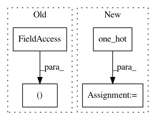

9e2a150b630e08a7037c1fd19e01cd5206e84a24,torch_geometric/transforms/grid_sampling.py,GridSampling,__call__,#GridSampling#Any#,22
Before Change
if torch.is_tensor(item) and item.size(0) == num_nodes:
if key == "y":
one_hot = torch.zeros((item.shape[0], self._num_classes))\
.scatter(1, item.unsqueeze(-1), 1)
aggr_labels = scatter_add(one_hot, pool, dim=0)
After Change
if torch.is_tensor(item) and item.size(0) == num_nodes:
if key == "y":
item = F.one_hot(item)
item = scatter_add(item, cluster, dim=0)
data[key] = item.argmax(dim=-1)
elif key == "batch":
data[key] = item[perm]
In pattern: SUPERPATTERN
Frequency: 3
Non-data size: 4
Instances
Project Name: rusty1s/pytorch_geometric
Commit Name: 9e2a150b630e08a7037c1fd19e01cd5206e84a24
Time: 2020-01-17
Author: matthias.fey@tu-dortmund.de
File Name: torch_geometric/transforms/grid_sampling.py
Class Name: GridSampling
Method Name: __call__
Project Name: tensorflow/mesh
Commit Name: 82de3503a2c350c7fe9239f8b666c6a94d3d79f4
Time: 2019-10-24
Author: noam@google.com
File Name: mesh_tensorflow/layers.py
Class Name:
Method Name: softmax_cross_entropy_with_logits
Project Name: tensorflow/transform
Commit Name: f73cdc286a3e125cf7019336621cb10370ebfd52
Time: 2019-04-25
Author: askerryryan@google.com
File Name: tensorflow_transform/tf_utils.py
Class Name:
Method Name: _reduce_vocabulary_inputs